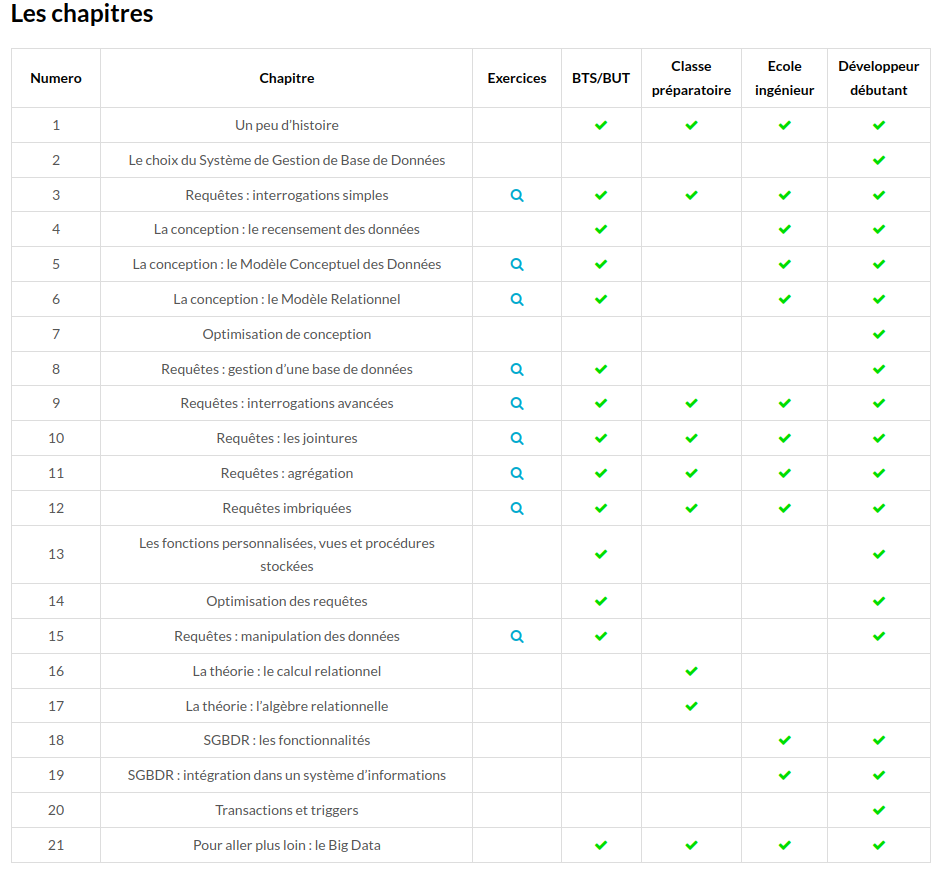
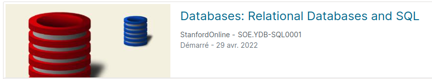
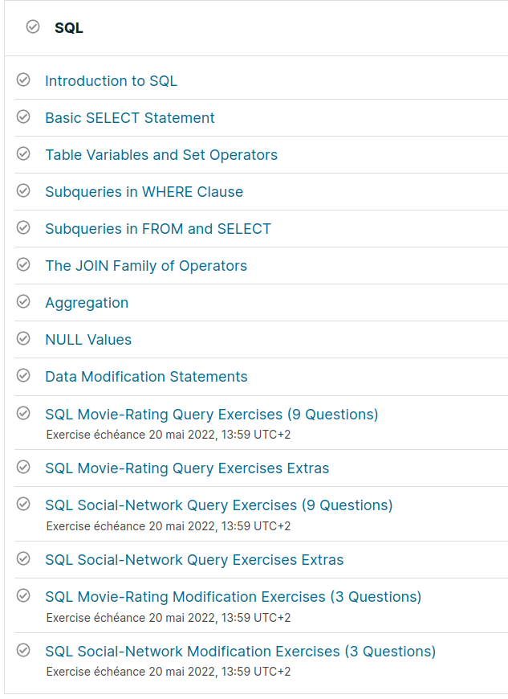
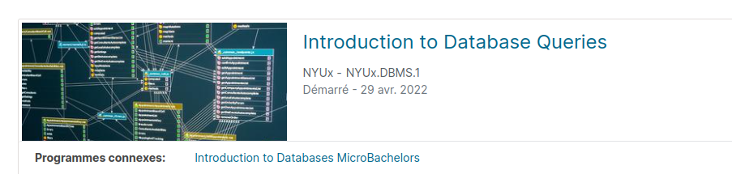
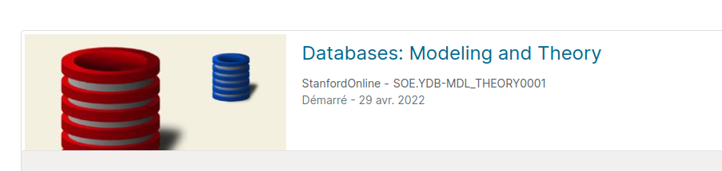
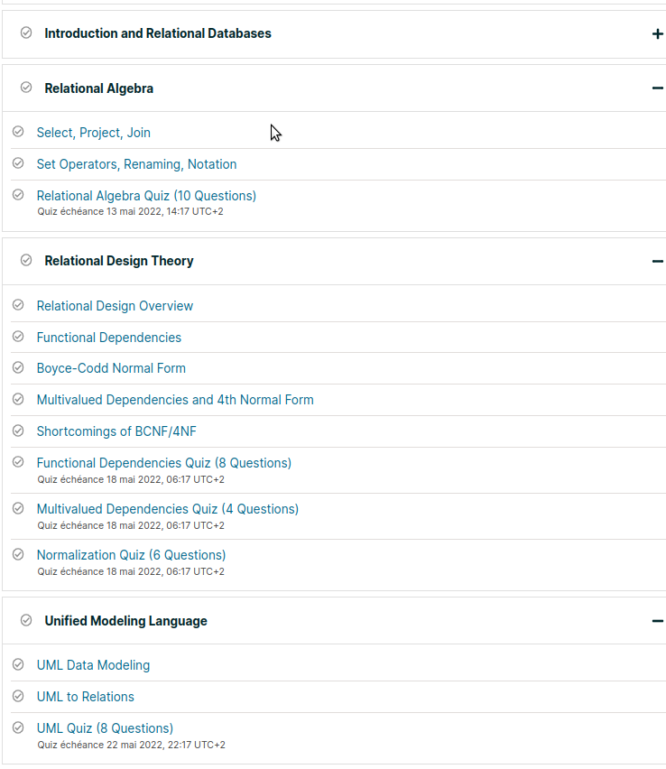
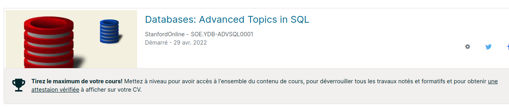
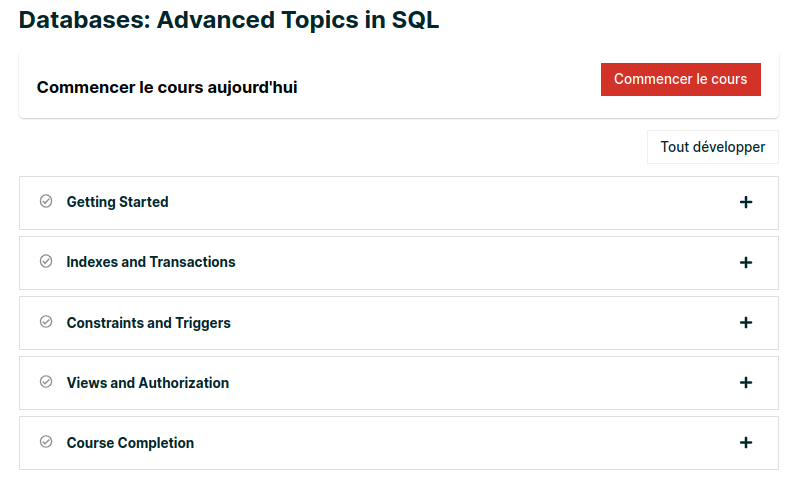
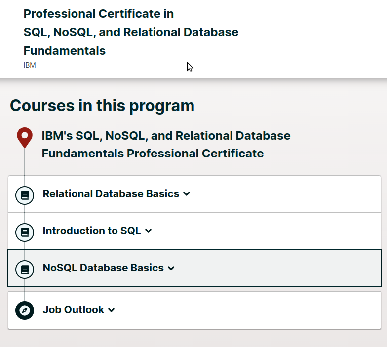

synthèse
http://www.sqlparexemple.fr/drupal/chapitres

progression livre BU
https://www.edx.org/

formation EDx Stanford
https://learning.edx.org/course/course-v1:StanfordOnline+SOE.YDB-SQL0001+2T2020/home

formation EDx Stanford : SQL les
bases

formation EDx Stanford
exemple code aggregatoin exemple code modification

formation EDx Stanford :
modelisation

formation EDx Stanford

formation EDx Stanford : SQL
avancé
http://formations.imt-atlantique.fr/bd_ihm/fr/normalisation/normal_forms_0d9221/

formation EDx Stanford

formation EDx Stanford
https://moodle.utbm.fr/Annales/BD50/final/
https://moodle.utbm.fr/Annales/BD51/final/